Differentiation related aesthetics: linetype, size, shape
Description
This page demonstrates the usage of a sub-group of aesthetics; linetype, size and shape.
Examples
# Line types should be specified with either an integer, a name, or with a string of # an even number (up to eight) of hexadecimal digits which give the lengths in # consecutive positions in the string. # 0 = blank, 1 = solid, 2 = dashed, 3 = dotted, 4 = dotdash, 5 = longdash, 6 = twodash # Data df <- data.frame(x = 1:10 , y = 1:10) f <- ggplot(df, aes(x, y)) f + geom_line(linetype = 2)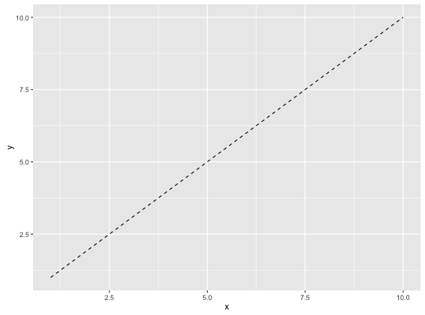
f + geom_line(linetype = "dotdash")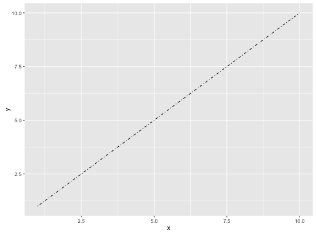
# An example with hex strings, the string "33" specifies three units on followed # by three off and "3313" specifies three units on followed by three off followed # by one on and finally three off. f + geom_line(linetype = "3313")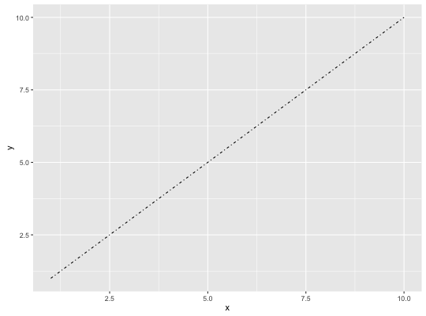
# Mapping line type from a variable ggplot(economics_long, aes(date, value01)) + geom_line(aes(linetype = variable))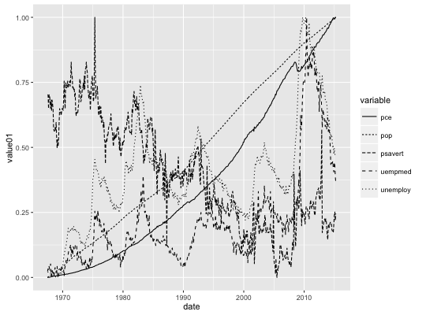
# Size examples # Should be specified with a numerical value (in millimetres), # or from a variable source p <- ggplot(mtcars, aes(wt, mpg)) p + geom_point(size = 4)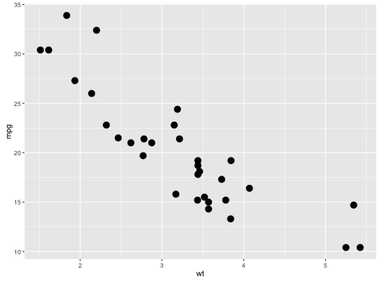
p + geom_point(aes(size = qsec))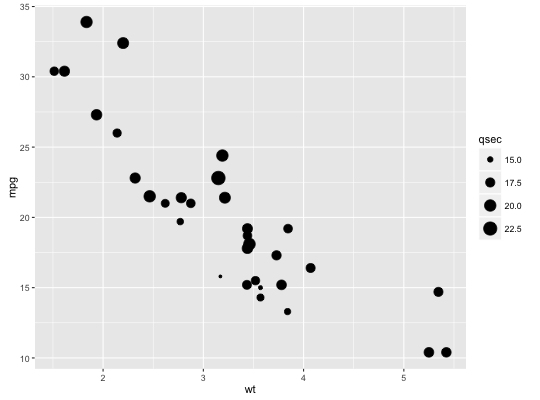
p + geom_point(size = 2.5) + geom_hline(yintercept = 25, size = 3.5)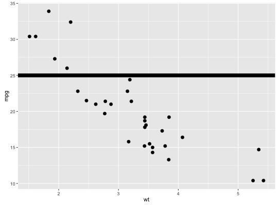
# Shape examples # Shape takes four types of values: an integer in [0, 25], # a single character-- which uses that character as the plotting symbol, # a . to draw the smallest rectangle that is visible (i.e., about one pixel) # an NA to draw nothing p + geom_point()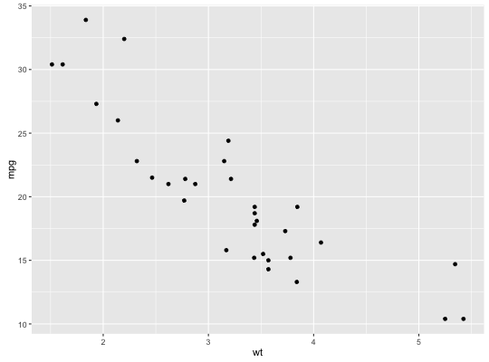
p + geom_point(shape = 5)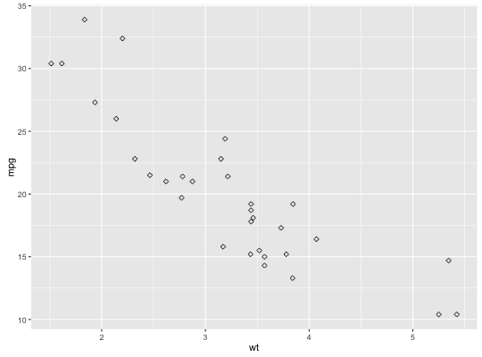
p + geom_point(shape = "k", size = 3)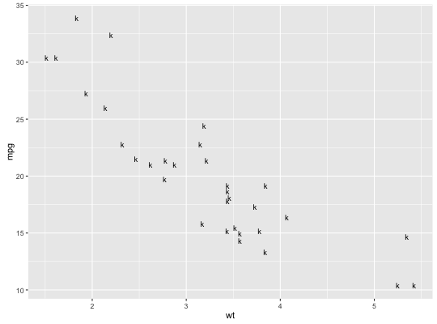
p + geom_point(shape = ".")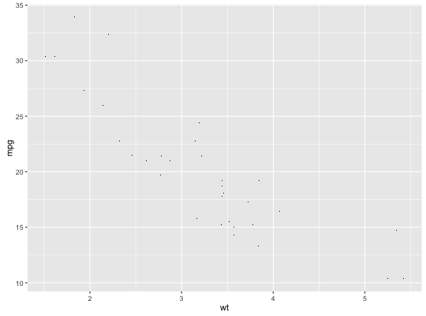
p + geom_point(shape = NA)Warning message: Removed 32 rows containing missing values (geom_point).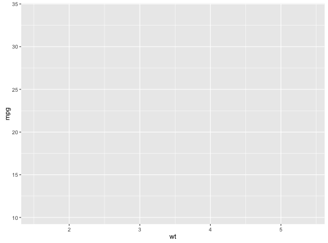
# Shape can also be mapped from a variable p + geom_point(aes(shape = factor(cyl)))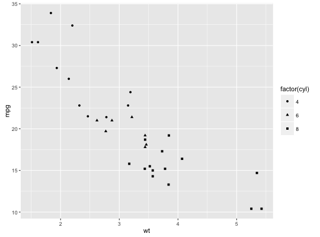
# A look at all 25 symbols df2 <- data.frame(x = 1:5 , y = 1:25, z = 1:25) s <- ggplot(df2, aes(x, y)) s + geom_point(aes(shape = z), size = 4) + scale_shape_identity()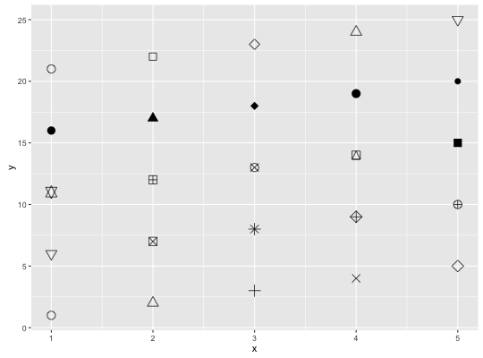
# While all symbols have a foreground colour, symbols 19-25 also take a # background colour (fill) s + geom_point(aes(shape = z), size = 4, colour = "Red") + scale_shape_identity()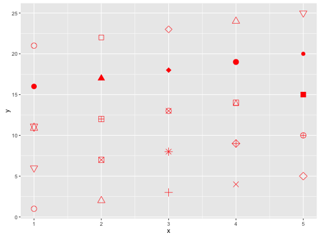
s + geom_point(aes(shape = z), size = 4, colour = "Red", fill = "Black") + scale_shape_identity()